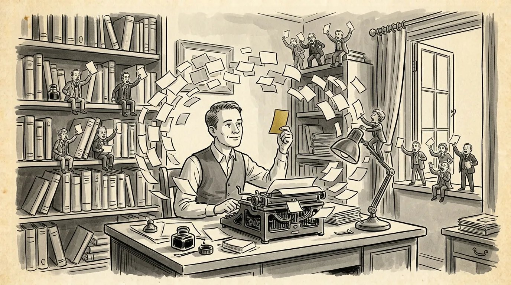

How to take script notes without losing your voice
I've given notes as a studio executive and taken them as a WGA writer. Here's how to hear what a note really means, decide what to do with it, and keep the script yours.


How to take script notes: the short answer
To take script notes well, listen for the problem behind each note, separate what's wrong from the suggested fix, and decide which notes to act on before you rewrite a word. Notes are information about how your script landed on a reader. They aren't orders, and they aren't verdicts on you.
Every working writer takes notes. In development they come from producers, executives, directors and sometimes actors. Before that they come from managers, contests, teachers and friends. I've been on both sides of that table, as an executive at Touchstone/Disney, Paramount and Warner Bros. and as a WGA writer for 30 years. The writers who get better from draft to draft aren't the ones who take every note. They're the ones who understand what each note is really pointing at.
The note behind the note
"The note behind the note" is industry shorthand for the real problem underneath what a reader actually says. Readers can usually feel that something isn't working. They're much less reliable at naming what it is.
The phrase gets used all over development, and as far as I can tell it has no single author; it's the kind of thing executives and writers say to each other until it sounds like common sense. No Film School describes it as the feeling a note-giver can't quite put into words. That's right. A note is a symptom report.
Here's how it plays out. A reader says, "Can the hero have a dog?" The note behind it might be: I don't like your hero yet. A producer says the ending is too dark. The note behind it might be: the ending doesn't feel earned, so it reads as cruel instead of tragic. An executive asks to cut a scene they found slow, when the real problem is that the scene before it already gave us the same information.
If you only execute the literal note, you often get the same note again on the next draft, because the underlying problem is still there. The fix is to ask yourself, every time: what did this reader feel, and where in the script did they start feeling it?
Separate the diagnosis from the prescription
Treat what a reader felt as data, and treat their suggested fix as one option among many. A reader can be completely right that something is wrong and completely wrong about how to fix it.
There's a widely shared piece of writing advice that says almost exactly this: when people tell you something isn't working, they're almost always right; when they tell you how to fix it, they're usually not. It holds up because readers experience your script from the outside. They know where they got bored or confused. They don't know what you were building toward, so their fix solves their reading, not your story.
In practice, sort every note into two parts:
- The diagnosis: "I lost track of what she wants in the second act." Take it seriously, even if it stings.
- The prescription: "Maybe she should have a sister she's trying to rescue." Consider it, but you're free to find a better fix, and you usually can.
Studio executives often give notes as prescriptions because it's faster. Your job is to work backward to the diagnosis. Then you can solve the real problem in a way that's true to your script, and the executive who gave the note is usually happy, because what they wanted was for the problem to go away.
How to listen on a notes call
On a notes call, your job is to listen, ask questions and gather information, not to defend the draft. You'll decide what to do later. The call is for understanding.
- Record it, with permission. You won't remember half of what was said, and you'll misremember the parts that hurt. A recording lets you listen again a day later, when you're calmer.
- Don't explain or defend. If you have to explain a scene, the scene isn't doing its job yet. Defending also teaches people to stop being honest with you.
- Ask clarifying questions. "Where did you first feel that?" "What did you expect to happen there?" "Was it the scene or the character?" These turn a vague note into a usable one.
- Ask about what's working. Knowing what to protect matters as much as knowing what to fix.
- Say thank you and stop there. You don't have to agree or commit to any change on the call.
The hardest part is the first ten minutes. Everyone wants to argue with the first note. Let it go by. The more questions you ask, the more the note behind the note comes out on its own.
This is also why I give notes on a live call instead of in a written report. You can ask what I meant, tell me what you were going for, and test a fix with me before we hang up.
How to handle script notes: triage before you rewrite
Not every note deserves a change, so sort them before you open the script. Writers who try to address every note at once usually end up with a draft that pleases nobody, themselves included.
Start with patterns. One reader's note is an opinion. The same note from three readers, even if each of them phrases it differently, is a problem in the script. If one person says the middle drags, another says the villain disappears and a third says the stakes feel low, they may all be describing the same hole in your second act.
Then sort what's left into three groups:
- Act on it. Notes that repeat across readers, notes that point at something you already suspected, and notes from the person paying for the draft.
- Think about it. Notes that surprised you. Give them a day. Some of the best notes feel wrong at first.
- Let it go. Notes that ask for a different movie, notes that contradict the core of what the script is, and notes that come down to one reader's taste.
Be honest with yourself in that third group. "This note asks for a different movie" is sometimes true and sometimes a way of avoiding work.
Studio notes vs. peer notes
Studio and development notes come with authority attached; peer notes come with freedom attached. Treat them differently, because they're doing different jobs.
When you're hired or your script is in development, notes come from people with a stake in the movie and a say over it: producers, executives, eventually a director. They're thinking about budget, casting, the audience and their own bosses. You can and should push back on a note you think will hurt the script, but you do it by offering a better solution to the same problem, not by refusing. In that setting, "I hear the concern, here's another way to solve it" is the most useful sentence you have.
Peer notes, from a writing group, a class or a friend who writes, have no authority at all. That's their value. Pixar co-founder Ed Catmull has described how the studio's internal notes group, the Braintrust, was designed to have no authority over the director. Candid notes, but the filmmaker decides. That's a good model for any peer group.
A few rules for giving and receiving screenplay notes among peers:
- Give the diagnosis first and the fix second, and label your fix as a suggestion.
- Talk about the script that's on the page, not the one you'd have written.
- Say what's working. Writers need to know what to keep.
- When you're receiving, ask the same clarifying questions you'd ask an executive.
How to protect your voice while taking notes
You protect your voice by knowing what your script is about before anyone gives you a note. If you know the core of it, you can take almost any note without losing it.
Before you send a draft out, write down in a sentence or two what the story is about and what you want an audience to feel at the end. Keep it next to you when you read the notes. A note that serves that sentence is your friend, even if it's painful. A note that fights it deserves a hard look.
Voice usually doesn't get lost to one big note. It gets lost to fifty small ones, each reasonable on its own: soften this line, explain that motive, make her more likable. After a few rounds, the script reads like everyone's and no one's. Watch for that drift, and when you see it, go back to the scenes and lines that made people respond to the script in the first place.
Your voice is also the reason anyone wanted the script. Executives who give notes generally want the writer they responded to, with fewer problems. They aren't asking you to become someone else.
Make a revision plan before you touch the script
Turn your triaged notes into a short written plan, then rewrite from the plan, not from the notes. The plan is where notes become your decisions.
A simple way to do it:
- Listen to the recording again and write down every note in plain language.
- Group them by underlying problem, not by reader. "The second act is repetitive" may cover six separate comments.
- For each problem, write the diagnosis in your own words and your own planned fix.
- Rank the problems. Fix structure first, then character, then scenes, then dialogue. A great line in a scene you'll cut is wasted work.
- Check the plan against your one-sentence statement of what the script is about.
Then rewrite. If you're stuck on the big structural fixes, it often helps to step back to an outline before going into pages; I've written about how to outline a screenplay and about what coverage tells you that's worth carrying into that plan.
The note tells you where the reader got lost. The fix is still yours to write.
Frequently asked questions
Should I address every script note I get?
No. Act on notes that repeat across readers or point at something you already suspected, think about the ones that surprise you, and let go of notes that ask for a different movie.
What is the note behind the note?
It's the real problem underneath what a reader says. Readers can usually tell something isn't working but are less reliable at naming why, so look for what they felt and where they started feeling it.
Should I push back on studio notes?
Yes, when a note would hurt the script, but do it by offering a better solution to the same problem rather than refusing. Executives mostly want the problem solved.
Can I record my notes call with you?
Yes, and I recommend it. My notes are given verbally on a live Zoom or phone call, so a recording lets you keep every word and listen again before you revise.